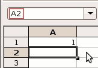
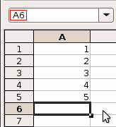
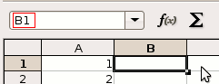
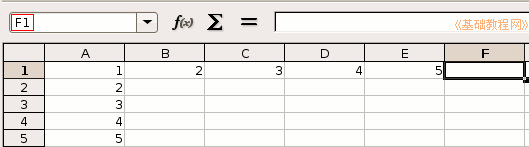
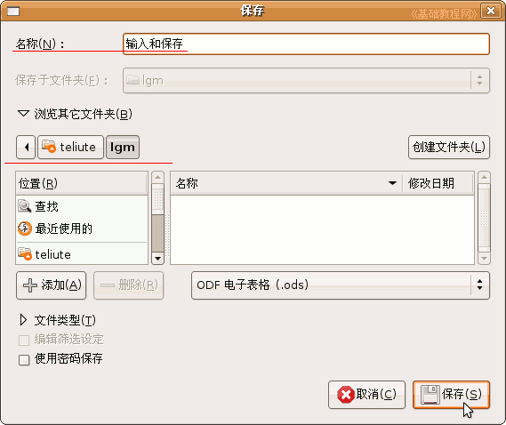

OpenOffice.org 教程之 Calc 电子表格
作者：TeliuTe 来源：基础教程网
输入和保存 返回目录 下一课上一节我们认识了Calc的窗口，这一节我们来学习怎样把数据输入到表格中，下面我们来看一个练习；
1、启动Calc
1）点击点菜单“应用程序－办公－OpenOffice.org 电子表格”；
2）出现一个满是格子的空白窗口，第一个格子看着边框要粗一些，表示选中状态；
2、输入数据
1）在左上角第一个格子中输入数字 1 ，然后按一下回车键，活动单元格移到下边一格；

2）继续输入2，然后按一下回车键，接着输入3，一直输到5，可以用小键盘来输入；

3）再点一下第一个单元格A1，重新回到第一格，按一下Tab键(在Q的左边），活动单元格跳到B1；

输入 2 ，然后再按一下Tab键，活动单元格跳到右边 C1 的格子里，输入3；
4）继续按Tab键，一直输到5，可以发现按回车键是向下，按Tab键是向右；

3、保存文件
1）点菜单“文件－保存”命令，出来一个保存对话框，
在中间的位置找到自己的文件夹，把上面的文件名改成“输入和保存”，点右下角的保存按钮；

2）在第一次保存会出来另存对话框，以后点“保存”，直接就保存了，不再出现这个对话框；
本节学习了输入数据和保存的基本操作，如果你成功地完成了练习，请继续学习下一课内容；
本教程由86团学校TeliuTe制作|著作权所有
基础教程网：http://teliute.org
美丽的校园……
转载和引用本站内容，请保留版权信息和本站链接。